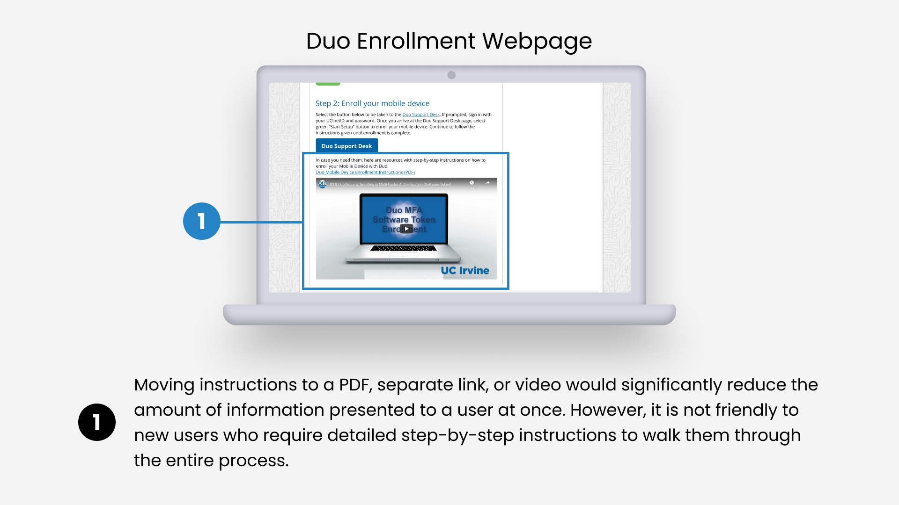
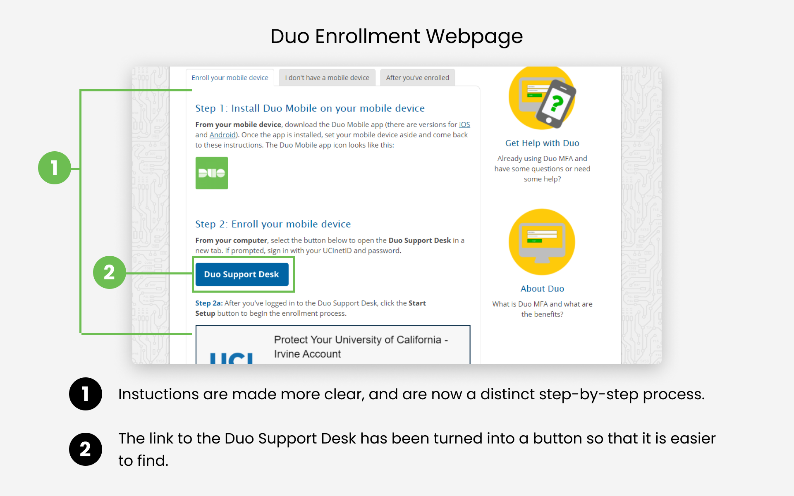

Overview üìò
One of my key projects as a UX Designer on the Alexa Human Effects (HFX) team was “Discreet SOS”, a feature designed to enable users to call for help discreetly in emergencies. This project was initiated by the head of the HFX division, who highlighted alarming statistics on personal safety, emphasizing the need for a silent emergency activation method.
The Problem üí¢
Currently, calling for emergency assistance requires either:
- Physically holding the phone and dialing emergency services.
- Using voice activation (e.g., "Alexa, call 911").
Gesture Interaction
I initially recommended a dedicated SOS gesture to ensure clear intent and avoid conflicts with existing gestures used for media controls. However, the development team was unsure of the technical constraints of adding a new gesture to the existing Echo Buds’ line. I adapted and recommended an existing one-handed gesture that balanced ease of use and low accidental activation risk.
Research üìò
Internal research and customer surveys indicated that gesture-activated emergency calls ranked among the most desired safety features for hearables. Additionally, broader research suggested a growing consumer demand for technology to enhance personal safety.
Design üìò
To design an effective solution, I established key criteria:
- One-handed accessibility: Users may have only one bud available or limited mobility.
- Minimizing false positives: Accidental activations should be avoided to prevent unnecessary distress or dispatching emergency services without cause.
- Reliable emergency response: Users need assurance that their distress signal reaches someone who can help.
Both of these methods can be conspicuous and potentially escalate dangerous situations. Echo Buds provide a unique opportunity to introduce a discreet emergency activation method via touch gestures without requiring a phone on-hand.
Stakeholder Feedback üìà
I presented my research and project plan to stakeholders at OIT.
After emphasizing the impact Duo has on the Help Desk, and demonstrating how my designs can mitigate that impact,
I received approval to work on redesigning their website.
As I worked on this project, I communicated my progress with the stakeholders, showed my designs to students,
and iterated based on feedback. Some initial designs were intended to make the enrollment page less intimidating by
moving the instructions to a PDF, separate page, or video. However, user testing and stakeholder feedback helped me
realize that step-by-step instructions must be instantly accessible, despite being long. Visibility is prioritized so
that in the event that new users need help with every single step of the enrollment process, the instructions are easy to find.

Design üíª
After presenting my designs and getting approval from stakeholders from OIT, I had the opportunity to
implement my designs directly on their website using WordPress. Now, the current
Duo Help Desk webpages are live and accessible to anyone:
Enroll in Duo Webpage - Enrollment Instructions:
The instructions have been restructured so that users are able to easily read each step.
There is now a distinct step-by-step process, instead of just a wall of paragraphs.
Duo Enrollment Webpage - Added visibility to the Duo Support Desk:
The link to the Duo Support Desk has been turned into a button. It is now much more visible and users no longer have trouble finding it.

Improving the user flow:
Instead of directing the user to the Duo Support Desk Home page, they are instead redirected straight to the enrollment process.
This prevents a user from getting lost on the home page, and skips an unnecessary step in the process.

Adding more visibility to self-troubleshooting:
A call to action has been added to the Duo FAQ page, to encourage users to click on the button if they experience an issue.
This makes troubleshooting instructions much easier to find.

Final Thoughts ü§î
Impact:
The improvements I have implemented will be seen by tens of thousands of UCI students
and employees who need to enroll in Duo. I made sure that my changes
would make the enrollment process more accessible and intuitive for new users.
Working with constraints:
Unfortunately, many of the changes I proposed to OIT were not implemented.
Some of the things that I wanted to change were outside of the scope of the Help Desk.
In addition, some websites that I wanted to improve were run on legacy software,
which meant that OIT was not willing to make tradeoffs
to improve them. As a result, I had to prioritize making improvements to the sites
which were within the project’s scope.
Taking the initiative:
My official job title at the Help Desk is “Help Desk Consultant”.
My responsibilities are to answer calls and emails for I.T support.
Nowhere in the job description does it say to perform UX case studies,
propose projects, and make changes to their support websites.
I am very proud that I took the initiative to spearhead this project, and am extremely
thankful to my supervisors who were very supportive and approved of the work I did.